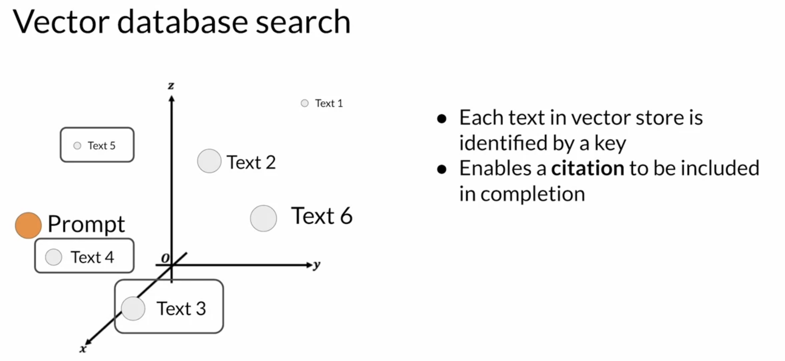
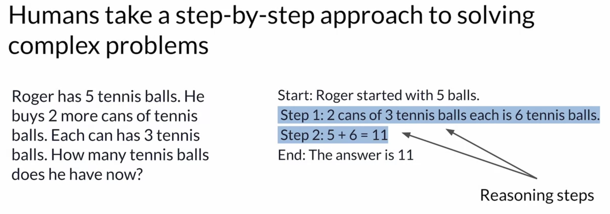
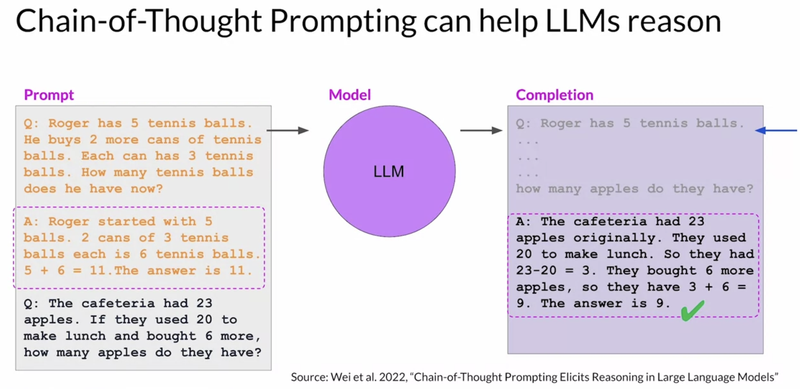

1. Reinforcement Learning from Human Feedback (RLHF)1.1. IntroductionRLHF helps to align the model with human values. For example, LLMs might have a challenge in that it's creating sometimes harmful content or like a toxic tone or voice.With some techniques, we can use LLMs as a reasoning engine. And giving them the power to make their own subroutine calls to maybe do a web search or take other actions.
"One thing about the giant large language models is they're so good at memorizing facts. You're learning facts off the Internet. Sometimes people use them as a repository of facts to get answers to their questions. But I think there's a different and maybe I think, more helpful way to think of the LLMS, which is if it's a reasoning engine and you give it APIs to go get its own facts because it's an okay. But not the best database of facts, but it's a very good reasoning engine. And that, I think, is a real power of these models."
1.2. Aligning Models with Human ValuesThe goal of fine-tuning with instructions, including PEFT methods, is to further train your models so that they better understand human like prompts and generate more human-like responses. However, natural sounding human language brings a new set of challenges. These problems exist because large models are trained on vast amounts of texts data from the Internet where such language appears frequently.Back To Top1.3. RLHFLet's consider the task of text summarization, where you use the model to generate a short piece of text that captures the most important points in a longer article. In a 2020 paper by OpenAI, they showed that a model fine-tuned on human feedback produced better responses than a pretrained model, an instruct fine-tuned model, and even the reference human baseline. RHLF A popular technique to finetune large language models with human feedback.You can use RLHF to make sure that your model produces outputs that maximize usefulness and relevance to the input prompt.It can help minimize the potential for harm.You can train your model to give caveats that acknowledge their limitations and to avoid toxic language and topics.One potentially exciting application of RLHF is the personalizations of LLMs, where models learn the preferences of each individual user through a continuous feedback process. This could lead to exciting new technologies like individualized learning plans or personalized AI assistants.1.3.1. How RHLF works?High-level overview of reinforcement learningReinforcement learning is a type of machine learning in which an agent learns to make decisions related to a specific goal by taking actions in an environment, with the objective of maximizing some notion of a cumulative reward.In this framework, the agent continually learns from its experiences by taking actions, observing the resulting changes in the environment, and receiving rewards or penalties, based on the outcomes of its actions. By iterating through this process, the agent gradually refines its strategy or policy to make better decisions and increase its chances of success.In the context of LLMs, The agent's policy that guides the actions is the LLM, and its objective is to generate text that is perceived as being aligned with the human preferences.* This could mean that the text is, for example, helpful, accurate, and non-toxic.* The environment is the context window of the model, the space in which text can be entered via a prompt. The state that the model considers before taking an action is the current context. i.e., any text currently contained in the context window. The action here is the act of generating text. * This could be a single word, a sentence, or a longer form text, depending on the task specified by the user. * The action space is the token vocabulary, meaning all the possible tokens that the model can choose from to generate the completion. How an LLM decides to generate the next token in a sequence, depends on the statistical representation of language that it learned during its training.At any given moment, the action that the model will take, meaning which token it will choose next, depends on the prompt text in the context and the probability distribution over the vocabulary space.The reward is assigned based on how closely the completions align with human preferences. * Given the variation in human responses to language, determining the reward can be complicated.One way you can do this is to have a human evaluate all of the completions of the model against some alignment metric, such as determining whether the generated text is toxic or non-toxic.This feedback can be represented as a scalar value, either a zero or a one.The LLM weights are then updated iteratively to maximize the reward obtained from the human classifier, enabling the model to generate non-toxic completions.However, obtaining human feedback can be time consuming and expensive.Back To Top1.3.2. Reward ModelAs a practical and scalable alternative, you can use an additional model, known as the reward model, to classify the outputs of the LLM and evaluate the degree of alignment with human preferences.You'll start with a smaller number of human examples to train the secondary model by your traditional supervised learning methods. Once trained, you'll use the reward model to assess the output of the LLM and assign a reward value, which in turn gets used to update the weights off the LLM and train a new human aligned version. Exactly how the weights get updated as the model completions are assessed, depends on the algorithm used to optimize the policy.The reward model is the central component of the reinforcement learning process. It encodes all of the preferences that have been learned from human feedback, and it plays a central role in how the model updates its weights over many iterations.
NOTE Note that in the context of language modeling, the sequence of actions and states is called a rollout, instead of the term playout that's used in classic reinforcement learning. Back To Top1.4. RLHF: Obtaining Feedback from HumansThe first step in fine-tuning an LLM with RLHF is to select a model to work with and use it to prepare a data set for human feedback.The model you choose should have some capability to carry out the task you are interested in.In general, you may find it easier to start with an instruct model that has already been fine tuned across many tasks and has some general capabilities.You'll then use this LLM along with a prompt data set to generate a number of different responses for each prompt. The next step is to collect feedback from human labelers on the completions generated by the LLM. This way you collect many examples.The same prompt completion sets are usually assigned to multiple human labelers to establish consensus and minimize the impact of poor labelers in the group. Labelers are often drawn from samples of the population that represent diverse and global thinking.
NOTE The clarity of your instructions can make a big difference on the quality of the human feedback you obtain. Here you can see an example set of instructions written for human labelers.The instructions start with the overall task the labeler should carry out. * In this case, to choose the best completion for the prompt. * The instructions continue with additional details to guide the labeler on how to complete the task.In general, the more detailed you make these instructions, the higher the likelihood that the labelers will understand the task they have to carry out and complete it exactly as you wish.Once your human labelers have completed their assessments off the Prom completion sets, you have all the data you need to train the reward model which you will use instead of humans to classify model completions during the reinforcement learning finetuning process.1.4.1. Prepare Labeled Data for TrainingBefore you start to train the reward model, however, you need to convert the ranking data into a pairwise comparison of completions. In other words, all possible pairs of completions from the available choices to a prompt should be classified as 0 or 1 score.In the example shown below, there are three completions to a prompt, and the ranking assigned by the human labelers was 2, 1, 3, as shown.With the three different completions, there are three possible pairs purple-yellow, purple-green and yellow-green. Depending on the number N of alternative completions per prompt, you will have a
n
2
combinations.For each pair, you will assign a reward of 1 for the preferred response and a reward of 0 for the less preferred response.Then you'll reorder the prompts so that the preferred option comes first. * This is an important step because the reward model expects the preferred completion, which is referred to as Yj first. * Once you have completed this data, restructuring, the human responses will be in the correct format for training the reward model. Note that while thumbs-up, thumbs-down feedback is often easier to gather than ranking feedback, ranked feedback gives you more prom completion data to train your reward model. As you can see, here you get three prompt completion pairs from each human ranking.Back To Top1.5. RLHF: Reward ModelBy the time you're done training the reward model, you won't need to include any more humans in the loop. Instead, the reward model will effectively take place off the human labeler and automatically choose the preferred completion during the oral HF process.This reward model is usually also a language model.For example, a BERT that is trained using supervised learning methods on the pairwise comparison data that you prepared from the human labelers assessment off the prompts. For a given prompt , the reward model learns to favor the human-preferred completion Yj, while minimizing the log sigmoid off the reward difference, rj-rk.As you saw on the last section, the human-preferred option is always the first one labeledYj.Once the model has been trained on the human rank prompt-completion pairs, you can use the reward model as a binary classifier to provide a set of logics across the positive and negative classes.Logits are the unnormalized model outputs before applying any activation function. Let's say you want to detoxify your LLM, and the reward model needs to identify if the completion contains hate speech. In this case, the two classes would be "not-hate", the positive class that you ultimately want to optimize for and "hate" the negative class you want to avoid. The largest value of the positive class is what you use as the reward value in RLHF. Just to remind you, if you apply a Softmax function to the logits, you will get the probabilities.The example here shows a good reward for non-toxic completion and the second example shows a bad reward being given for toxic completion. Back To Top1.6. RLHF: Fine-tuning with Reinforcement LearningHow to use the reward model in the reinforcement learning process to update the LLM weights, and produce a human aligned model.Remember, you want to start with a model that already has good performance on your task of interests. You'll work to align an instruction fine-tuned LLM.These series of steps together forms a single iteration of the RLHF process:1. First, you'll pass a prompt from your prompt dataset. * In this case, a dog is, to the instruct LLM, which then generates a completion, in this case a furry animal. * 2. Next, you sent this completion, and the original prompt to the reward model as the prompt completion pair. * The reward model evaluates the pair based on the human feedback it was trained on, and returns a reward value. A higher value such as 0.24 as shown here represents a more aligned response. A less aligned response would receive a lower value, such as -0.53. 3. You'll then pass this reward value for the prom completion pair to the reinforcement learning algorithm to update the weights of the LLM, and move it towards generating more aligned, higher reward responses. * Let's call this intermediate version of the model the RLupdated LLM. These iterations continue for a given number of epochs, similar to other types of fine tuning.If the process is working well, you'll see the reward improving after each iteration as the model produces text that is increasingly aligned with human preferences.You will continue this iterative process until your model is aligned based on some evaluation criteria. For example,* reaching a threshold value for the helpfulness you defined.* You can also define a maximum number of steps, for example, 20,000 as the stopping criteria. Let's refer to the fine-tuned model as the human-aligned LLM.A popular choice for the RL algorithm is Proximal Policy Optimization (PPO).Back To Top1.7. RLHF: Proximal Policy OptimizationTBA1.8. RLHF: Reward HackingAn interesting problem that can emerge in reinforcement learning is known as reward hacking where the agent learns to cheat the system by favoring actions that maximize the reward received even if those actions don't align well with the original objective.In the context of LLMs, reward hacking can manifest as the addition of words or phrases to completions that result in high scores for the metric being aligned. But that reduce the overall quality of the language.For example,Suppose you are using RHF to detoxify and instruct model. You have already trained a reward model that can carry out sentiment analysis and classify model completions as toxic or non-toxic. You select a prompt from the training data this product is, and pass it to the instruct an LLM which generates a completion. This one, "complete garbage" is not very nice and you can expect it to get a high toxic rating.The completion is processed by the toxicity of reward model, which generates a score and this is fed to the PPO algorithm, which uses it to update the model weights. As you iterate RHF will update the LLM to create a less toxic responses. However, as the policy tries to optimize the reward, it can diverge too much from the initial language model. In this example, the model has started generating completions that it has learned will lead to very low toxicity scores by including phrases like most awesome, most incredible. This language sounds very exaggerated.
The model could also start generating nonsensical, grammatically incorrect text that just happens to maximize the rewards in a similar way, outputs like this are definitely not very useful. To prevent our reward hacking from happening, you can use the initial instruct LLM as performance reference. Let's call it the reference model. The weights of the reference model are frozen and are not updated during iterations of RHF.* This way, you always maintain a single reference model to compare to. * During training, each prompt is passed to both models, generating a completion by the reference LLM and the intermediate LLM updated model. At this point, you can compare the two completions and calculate a value called the Kullback-Leibler divergence, or KL divergence for short. * KL divergence is a statistical measure of how different two probability distributions are. You can use it to compare the completions off the two models and determine how much the updated model has diverged from the reference. * * The KL divergence algorithm is included in many standard machine learning libraries and you can use it without knowing all the math behind it.* * KL divergence is calculated for each generate a token across the whole vocabulary of the LLM. * * This can easily be tens or hundreds of thousands of tokens. However, using a softmax function, you've reduced the number of probabilities to much less than the full vocabulary size.* NOTE Keep in mind that this is still a relatively compute expensive process. You will almost always benefit from using GPUs. * Once you've calculated the KL divergence between the two models, you added as a term to the reward calculation. * This will penalize the RL updated model if it shifts too far from the reference LLM and generates completions that are two different.* NOTE Note that you now need to full copies of the LLM to calculate the KL divergence, the frozen reference LLM, and the oral updated PPO LLM.1.8.1. RLHF + PEFTYou can benefit from combining our relationship with PEFT. In this case, you only update the weights of a path adapter, not the full weights of the LLM.This means that you can reuse the same underlying LLM for both the reference model and the PPO model, which you update with a trained path parameters. This reduces the memory footprint during training by approximately half. 1.8.2. Assess RLHF Model PerformanceOnce you have completed your RHF alignment of the model, you will want to assess the model's performance.You can use the summarization data set to quantify the reduction in toxicity, for example, the dialogsum data set that you saw earlier in the course.The number you'll use here is the toxicity score, this is the probability of the negative class, in this case, a toxic or hateful response averaged across the completions. If RHF has successfully reduce the toxicity of your LLM, this score should go down. First, you'll create a baseline toxicity score for the original instruct LLM by evaluating its completions off the summarization data set with a reward model that can assess toxic language. Then you'll evaluate your newly human aligned model on the same data set and compare the scores. In this example, the toxicity score has indeed decreased after RLHF, indicating a less toxic, better aligned model.Back To Top1.9. KL DivergenceKL-Divergence, or Kullback-Leibler Divergence, is a concept often encountered in the field of reinforcement learning, particularly when using the Proximal Policy Optimization (PPO) algorithm. It is a mathematical measure of the difference between two probability distributions, which helps us understand how one distribution differs from another. In the context of PPO, KL-Divergence plays a crucial role in guiding the optimization process to ensure that the updated policy does not deviate too much from the original policy.In PPO, the goal is to find an improved policy for an agent by iteratively updating its parameters based on the rewards received from interacting with the environment. However, updating the policy too aggressively can lead to unstable learning or drastic policy changes. To address this, PPO introduces a constraint that limits the extent of policy updates. This constraint is enforced by using KL-Divergence.To understand how KL-Divergence works, imagine we have two probability distributions: The distribution of the original LLM, and a new proposed distribution of an RL-updated LLM. KL-Divergence measures the average amount of information gained when we use the original policy to encode samples from the new proposed policy. * By minimizing the KL-Divergence between the two distributions, PPO ensures that the updated policy stays close to the original policy, preventing drastic changes that may negatively impact the learning process.1.9.1. Transformer Reinforcement Learning (TRL)A library that you can use to train transformer language models with reinforcement learning, using techniques such as PPO, is TRL (Transformer Reinforcement Learning). In this link you can read more about this library, and its integration with PEFT(Parameter-Efficient Fine-Tuning) methods, such as LoRA (Low-Rank Adaption). The image shows an overview of the PPO training setup in TRL.Back To Top1.10. Scaling Human FeedbackTBABack To Top2. LLM-Powered Applications2.1. Model Optimizations for DeploymentLet's talk about the things you'll have to consider to integrate your model into applications. There are a number of important questions to ask at this stage.The first set is related to how your LLM will function in deployment.So how fast do you need your model to generate completions? What compute budget do you have available? And are you willing to trade off model performance for improved inference speed or lower storage?The second set of questions is tied to additional resources that your model may need.Do you intend for your model to interact with external data or other applications? And if so, how will you connect to those resources?* Lastly, there's the question of how your model will be consumed. What will the intended application or API interface that your model will be consumed through look like?2.1.1. Model Optimizations to Improve Application PerformanceLet's start by exploring a few methods that can be used to optimize your model before deploying it for inference.Large language models present inference challenges in terms of computing and storage requirements, as well as ensuring low latency for consuming applications. These challenges persist whether you're deploying on premises or to the cloud, and become even more of an issue when deploying to edge devices.One of the primary ways to improve application performance is to reduce the size of the LLM.This can allow for quicker loading of the model, which reduces inference latency.However, the challenge is to reduce the size of the model while still maintaining model performance.Some techniques work better than others for generative models, and there are tradeoffs between accuracy and performance.There are three techniques. These techniques aim to reduce model size to improve model performance during inference without impacting accuracy.Distillation Uses a larger model, the teacher model, to train a smaller model, the student model. You then use the smaller model for inference to lower your storage and compute budget.QuantizationSimilar to quantization aware training, post training quantization transforms a model's weights to a lower precision representation, such as a 16-bit floating point or 8-bit integer.Model Pruning Removes redundant model parameters that contribute little to the model's performance. 2.1.2. Model DistillationIt is a technique that focuses on having a larger teacher model train a smaller student model.Note that with Distillation, you're training a second, smaller model to use during inference.You aren't reducing the model size of the initial LLM in any way. The student model learns to statistically mimic the behavior of the teacher model, either just in the final prediction layer or in the model's hidden layers as well.You start with your fine tune LLM as your teacher model and create a smaller LLM for your student model.You freeze the teacher model's weights and use it to generate completions for your training data. At the same time, you generate completions for the training data using your student model.The knowledge distillation between teacher and student model is achieved by minimizing a loss function called the distillation loss. * To calculate this loss, distillation uses the probability distribution over tokens that is produced by the teacher model's softmax layer. * * Now, the teacher model is already fine tuned on the training data. * * So the probability distribution likely closely matches the ground truth data and won't have much variation in tokens. * * That's why distillation applies a little trick by adding a temperature parameter to the softmax function a higher temperature increases the creativity of the language the model generates.* * With a temperature parameter greater than one, the probability distribution becomes broader and less strongly peaked. * * This softer distribution provides you with a set of tokens that are similar to the ground truth tokens. In the context of distillation,the teacher model's output is often referred to as soft labels and the student model's predictions as soft predictions. * * In parallel, you train the student model to generate the correct predictions based on your ground truth training data. Here, you don't vary the temperature setting and instead use the standard softmax function. Distillation refers to the student model outputs as the hard predictions and hard labels. The loss between these two is the student loss.The combined distillation and student losses are used to update the weights of the student model via backpropagation. The key benefit of distillation methods is that the smaller student model can be used for inference in deployment instead of the teacher model.NOTE In practice, distillation is not as effective for generative decoder models. It's typically more effective for encoder only models, such as BERT that have a lot of representation redundancy.Back To Top2.1.3. Post-Training Quantization (PTQ)It's similar to Quantization Aware Training (QAT) from previous chapters. After a model is trained, you can perform PTQ to optimize it for deployment.PTQtransforms a model's weights to a lower precision representation, such as 16-bit floating point or 8-bit integer. To reduce the model size and memory footprint, as well as the compute resources needed for model serving, quantization can be applied to just the model weights or to both weights and activation layers. In general, quantization approaches that include the activations can have a higher impact on model performance.Quantization also requires an extra calibration step to statistically capture the dynamic range of the original parameter values.
As with other methods, there are tradeoffs because sometimes quantization results in a small percentage reduction in model evaluation metrics However, that reduction can often be worth the cost savings and performance gains.2.1.4. Model PruningAt a high level, the goal is to reduce model size for inference by eliminating weights that are not contributing much to overall model performance.These are the weights with values very close to or equal to zero. Note that some pruning methods require full retraining of the model, while others fall into the category of parameter efficient fine tuning, such as LoRA.There are also methods that focus on post-training Pruning. In theory, this reduces the size of the model and improves performance. In practice, however, there may not be much impact on the size and performance if only a small percentage of the model weights are close to zero.Back To Top2.2. Generative AI Project Lifecycle - Cheat SheetThis cheat sheet provide some indication of the time and effort required for each phase of work.Pre-training a LLM can be a huge effort This stage is the most complex you'll face because of the model architecture decisions, the large amount of training data required, and the expertise needed. NOTE In general, you will start your development work with an existing foundation model. You'll probably be able to skip this stage.If you're using a foundation model, you'll likely start to assess the model's performance through prompt engineering.If your model isn't performing as you need, you'll next think about prompt tuning and fine tuning.Depending on your use case, performance goals, and compute budget, the methods you'll try could range from full fine-tuning to parameter efficient fine tuning techniques like LoRA or prompt tuning. But since fine-tuning can be very successful with a relatively small training dataset, this phase could potentially be completed in a single day.Aligning your model using reinforcement learning from human feedback can be done quickly, once you have your train reward model. You'll likely see if you can use an existing reward model for this work.However, if you have to train a reward model from scratch, it could take a long time because of the effort involved to gather human feedback.Finally, optimization techniques you learned about in the previous sections, typically fall in the middle in terms of complexity and effort, but can proceed quite quickly assuming the changes to the model don't impact performance too much. Back To Top2.3. Using the LLM ApplicationsThere are some broader challenges with LLMs that can't be solved by training alone. Let's take a look at a few examples.1. One issue is that the internal knowledge held by a model cuts off at the moment of pretraining.1. 2. Models can also struggle with complex math. If you prompt a model to behave like a calculator, it may get the answer wrong, depending on the difficulty of the problem.2. 3. One of the best known problems of LLMs is their tendency to generate text even when they don't know the answer to a problem This is often called hallucination.Here, we'll learn about some techniques that you can use to help your LLM overcome these issues by connecting to external data sources and applications.Your application must manage the passing of user input to the large language model and the return of completions. This is often done through some type of orchestration library.This layer can enable some powerful technologies that augment and enhance the performance of the LLM at runtime. By providing access to external data sources or connecting to existing APIs of other applications. One implementation example is Langchain.2.3.1. Retrieval Augmented Generation (RAG)Retrieval Augmented Generation (RAG) is a framework for building LLM powered systems that make use of external data sources and applications to overcome some of the limitations of these models.RAG is a great way to overcome the knowledge cutoff issue and help the model update its understanding of the world.While you could retrain the model on new data, this would quickly become very expensive. And require repeated retraining to regularly update the model with new knowledge.A more flexible and less expensive way to overcome knowledge cutoffs is to give your model access to additional external data at inference time. RAG is useful in any case where you want the language model to have access to data that it may not have seen.This could be new information documents not included in the original training data, or proprietary knowledge stored in your organization's private databases. Providing your model with external information, can improve both the relevance and accuracy of its completions.2.3.2. How RAG works?RAGisn't a specific set of technologies, but rather a framework for providing LLMs access to data they did not see during training.A number of different implementations exist, and the one you choose will depend on the details of your task and the format of the data you have to work with.Here, we discuss the RAG implementation proposed in a paper by Facebook in 2020.At the heart of this implementation is a model component called the Retriever, which consists of a query encoder and an external data source.The encoder takes the user's input prompt and encodes it into a form that can be used to query the data source.In the Facebook paper, the external data is a vector store but it could be SQL database, CSV file, or any other data storage format.These two components are trained together to find documents within the external data that are most relevant to the input query. The Retriever returns the best single or group of documents from the data source and combines the new information with the original user query. The new expanded prompt is then passed to the language model, which generates a completion that makes use of the data.2.3.3. Example RAGImagine you are a lawyer using a large language model to help you in the discovery phase of a case.A RAG architecture can help you ask questions of a corpus of documents, for example, previous court filings.Here's how it works:The prompt is passed to the query encoder, which encodes the data in the same format as the external documents. And then searches for a relevant entry in the corpus of documents. Having found a piece of text that contains the requested information, the Retriever then combines the new text with the original prompt.The expanded prompt that now contains information about the specific case of interest is then passed to the LLM. The model uses the information in the context of the prompt to generate a completion that contains the correct answer. The use case you have seen here is quite simple and only returns a single piece of information that could be found by other means. But imagine the power of RAG to be able to generate summaries of filings or identify specific people, places and organizations within the full corpus of the legal documents. Allowing the model to access information contained in this external data set greatly increases its utility for this specific use case.Back To Top2.3.4. VectorstoresIn addition to overcoming knowledge cutoffs, rag also helps you avoid the problem of the model hallucinating when it doesn't know the answer. RAG architectures can be used to integrate multiple types of external information sources.You can augment large language models with access to local documents, including private wikis and expert systems.RAG can also enable access to the Internet to extract information posted on web pages, for example, Wikipedia.By encoding the user input prompt as a SQL query, RAG can also interact with databases.Another important data storage strategy is a Vector Store, which contains vector representations of text. * This is a particularly useful data format for language models, since internally they work with vector representations of language to generate text. Vector stores enable a fast and efficient kind of relevance search based on similarity.2.3.5. Notes on implementing RAGNote that implementing RAG is a little more complicated than simply adding text into the large language model. There are a couple of key considerations to be aware of.Context WindowMost text sources are too long to fit into the limited context window of the model, which is still at most just a few thousand tokens. Instead, the external data sources are chopped up into many chunks, each of which will fit in the context window.Packages like Langchain can handle this work for you.Second, the data must be available in a format that allows for easy retrieval of the most relevant text.Recall that large language models don't work directly with text, but instead create vector representations of each token in an embedding space.These embedding vectors allow the LLM to identify semantically related words through measures such as cosine similarity, which you learned about earlier.RAG methods take the small chunks of external data and process them through the large language model, to create embedding vectors for each. These new representations of the data can be stored in structures called vector stores, which allow for fast searching of datasets and efficient identification of semantically related text.Vector databases are a particular implementation of a vector store where each vector is also identified by a key. * This can allow, for instance, the text generated by RAG to also include a citation for the document from which it was received.

Back To Top2.4. Interacting with External ApplicationsNow let's take a look at how they can interact with external applications.To motivate the types of problems and use cases that require this kind of augmentation of the LLM, you'll revisit the customer service bot example (ShopBot).Let's examine the integrations that you'd need to allow the app to process a return requests from end to end.In this conversation (see below), the customer has expressed that they want to return some jeans that they purchased. ShopBot responds by asking for the order number, which the customer then provides. ShopBot then looks up the order number in the transaction database. * One way it could do this is by using a RAG implementation. * In this case here, you would likely be retrieving data through a SQL query to a back-end order database rather than retrieving data from a corpus of documents.* Once ShopBot has retrieved the customers order, the next step is to confirm the items that will be returned. The bot ask the customer if they'd like to return anything other than the genes. After the user states their answer, the bot initiates a request to the company's shipping partner for a return label. The bot uses the shippers Python API to request the labelShopBot is going to email the shipping label to the customer. It also asks them to confirm their email address. The customer responds with their email address and the bot includes this information in the API call to the shipper. Once the API request is completed, the bot let's the customer know that the label has been sent by email, and the conversation comes to an end. This short example illustrates just one possible set of interactions that you might need an LLM to be capable of to power and application. In general, connecting LLMs to external applications allows the model to interact with the broader world, extending their utility beyond language tasks. As the ShopBot example showed, LLMs can be used to trigger actions when given the ability to interact with APIs. LLMs can also connect to other programming resources. * For example, a Python interpreter that can enable models to incorporate accurate calculations into their outputs.* It's important to note that prompts and completions are at the very heart of these workflows. The actions that the app will take in response to user requests will be determined by the LLM, which serves as the application's reasoning engine. 2.4.1. How to trigger actions using LLMs?In order to trigger actions, the completions generated by the LLM must contain certain important information. 1. First, the model needs to be able to generate a set of instructions so that the application knows what actions to take. 1. * These instructions need to be understandable and correspond to allowed actions. * * In the ShopBot example for instance, the important steps were; checking the order ID, requesting a shipping label, verifying the user email, and emailing the user the label. 2. Second, the completion needs to be formatted in a way that the broader application can understand.2. * This could be as simple as a specific sentence structure or as complex as writing a script in Python or generating a SQL command. * For example, below is a SQL query that would determine whether an order is present in the database of all orders. 3. Lastly, the model may need to collect information that allows it to validate an action.3. * For example, in the ShopBot conversation, the application needed to verify the email address the customer used to make the original order.* * Any information that is required for validation needs to be obtained from the user and contained in the completion so it can be passed through to the application. NOTE Structuring the prompts in the correct way is important for all of these tasks and can make a huge difference in the quality of a plan generated or the adherence to a desired output format specification.Back To Top2.5. Helping LLMs Reason and Plan with Chain-of-ThoughtIt is important that LLMs can reason through the steps that an application must take, to satisfy a user request. Unfortunately, complex reasoning can be challenging for LLMs, especially for problems that involve multiple steps or mathematics.These problems exist even in large models that show good performance at many other tasks.Here's one example where an LLM has difficulty completing the task.* This answer is incorrect, as you found out if you solve the problem.2.5.1. Chain-of-ThoughtOne strategy that has demonstrated some success is prompting the model to think more like a human, by breaking the problem down into steps.Applyging this to the previous example is shown below.The full sequence of steps illustrates the chain-of-thought that went into solving the problem.Asking the model to mimic this behavior is known as chain-of-thought prompting. * It works by including a series of intermediate reasoning steps into any examples that you use for one or few-shot inference. * By structuring the examples in this way, you're essentially teaching the model how to reason through the task to reach a solution.

Here's the same apples problem from above, now reworked as a chain-of-thought prompt. This time you include intermediate reasoning steps in the solution text These steps are basically equivalent to the ones a human might take.Notice that the model has now produced a more robust and transparent response that explains its reasoning steps, following a similar structure as the one-shot example.NOTE One thing to note is that while the input prompt is shown here in a condensed format to save space, the entire prompt is actually included in the output.

You can use chain-of-thought prompting to help LLMs improve their reasoning of other types of problems too, in addition to arithmetic. Here's an example of a simple physics problem:Chain of thought prompting is a powerful technique that improves the ability of your model to reason through problems. While this can greatly improve the performance of your model, the limited math skills of LLMs can still cause problems if your task requires accurate calculations, like totaling sales on an e-commerce site, calculating tax, or applying a discount.In the next section, you'll explore a technique that can help you overcome this problem, by letting your LLM talk to a program that is much better at math Program-Aided Language (PAL) models.Back To Top2.6. Program-Aided Language Models (PAL)Even if the model correctly reasons through a problem, it may still get the individual math operations wrong, especially with larger numbers or complex operations. Here's an example where the LLM gives the wrong answer:NOTE Remember, the model isn't actually doing any real math here. It is simply trying to predict the most probable tokens that complete the prompt. You can overcome this limitation by allowing your model to interact with external applications that are good at math, like a Python interpreter. One interesting framework for augmenting LLMs in this way is called Program-Aided Language models (PAL).It first presented by Luyu Gao and collaborators at Carnegie Mellon University in 2022.It pairs an LLM with an external code interpreter to carry out calculations.The method makes use of chain of thought prompting to generate executable Python scripts. The scripts that the model generates are passed to an interpreter to execute. The strategy behind PAL is to have the LLM generate completions where reasoning steps are accompanied by computer code.This code is then passed to an interpreter to carry out the calculations necessary to solve the problem. You specify the output format for the model by including examples for one or few short inference in the prompt.2.6.1. How to structure prompts for PALs?This is a chain of thought example. You can see the reasoning steps written out in words on the lines highlighted in blue. What differs from the prompts you saw before is the inclusion of lines of Python code shown in pink.These lines translate any reasoning steps that involve calculations into code. Variables are declared based on the text in each reasoning step. Their values are assigned either directly, as in the first line of code here, or as calculations using numbers present in the reasoning text as you see in the second Python line.The model can also work with variables it creates in other steps, as you see in the third line.NOTE Note that the text of each reasoning step begins with a # sign, so that the line can be skipped as a comment by the Python interpreter. The prompt here ends with the new problem to be solved. In this case, the objective is to determine how many loaves of bread a bakery has left after a day of sales and after some loaves are returned from a grocery store partner.On the right, you can see the completion generated by the LLM. The chain of thought reasoning steps are shown in blue and the Python code is shown in pink.2.6.2. How the PAL framework enables an LLM to interact with an external interpreter?To prepare for inference with PAL, you'll format your prompt to contain one or more examples.Each example should contain a question followed by reasoning steps in lines of Python code that solve the problem.Next, you will append the new question that you'd like to answer to the prompt template.* Your resulting PAL formatted prompt now contains both the example and the problem to solve. * Next, you'll pass this combined prompt to your LLM, which then generates a completion that is in the form of a Python script having learned how to format the output based on the example in the prompt. You can now hand off the script to a Python interpreter, which you'll use to run the code and generate an answer.You'll now append the text containing the answer, which you know is accurate because the calculation was carried out in Python to the PAL formatted prompt you started with.By this point you have a prompt that includes the correct answer in context. Now when you pass the updated prompt to the LLM, it generates a completion that contains the correct answer. PAL is a powerful technique that allows you to ensure that any calculations done by your application are accurate and reliable. 2.6.3. How to automate PAL prompting?The goal is not to pass information back and forth between the LLM, and the interpreter by hand This is where the orchestrator comes in.The orchestrator is a technical component that can manage the flow of information and the initiation of calls to external data sources or applications. It can also decide what actions to take based on the information contained in the output of the LLM. NOTE Remember, the LLM is your application's reasoning engine. Ultimately, it creates the plan that the orchestrator will interpret and execute.In PAL there's only one action to be carried out, the execution of Python code. The LLM doesn't really have to decide to run the code, it just has to write the script which the orchestrator then passes to the external interpreter to run. NOTE However, most real-world applications are likely to be more complicated than the simple PAL architecture. Your use case may require interactions with several external data sources.Back To Top2.7. ReAct: Combining Reasoning and ActionMost applications will require the LLM to manage more complex workflows (then the example above), perhaps in including interactions with multiple external data sources and applications.ReAct is a prompting strategy that combines chain of thought reasoning with action planning.The framework was proposed by researchers at Princeton and Google in 2022.The paper develops a series of complex prompting examples based on problems from Hotspot QA, a multi-step question answering benchmark that requires reasoning over two or more Wikipedia passages.Fever a benchmark that uses Wikipedia passages to verify facts. In order for the model to interact with an external application or data source, it has to identify an action to take from a pre-determined list. In the case of the ReAct framework, the authors created a small Python API to interact with Wikipedia. ReAct uses structured examples to show a large language model how to reason through a problem and decide on actions to take that move it closer to a solution.Question Problem that requires advanced reasoning and multiple steps to solve.e.g. Which magazine was started first, Arthur's Magazine or First for Women?Thought A reasoning step that identifies how the model will tackle the problem and identify an action to take.e.g. I need to search Arthur's Magazine and First for Women, and find which one was started first.Action An external task that the model can carry out from an allowed set of actions. Which one to choose is determined by the information in the preceding thought.e.g. search[entity], lookup[string], finish[answer].NOTE The action is formatted using the specific square bracket notation you see here, so that the model will format its completions in the same way.Observation The result of carrying out the action.e.g. Arthur's Magazine (1844-1846) was an American literacy periodical published in Philadelphia in the 19th century.For the model to interpret the prompt then repeats the cycle as many times as is necessary to obtain the final answer.NOTE It's important to note that in the ReAct framework, the LLM can only choose from a limited number of actions that are defined by a set of instructions that is pre-pended to the example prompt text.The full text of the instructions is shown below.* The final sentence in the instructions lets the LLM know that some examples will come next in the prompt text.* It is critical to define a set of allowed actions when using LLMs to plan tasks that will power applications.
ReAct Prompt ExampleDepending on the LLM you're working with, you may find that you need to include more than one example and carry out future inference. Next, you'll pre-pend the instructions at the beginning of the example and then insert the question you want to answer at the end.The full prompt now includes all of these individual pieces, and it can be passed to the LLM for inference.NOTE The ability of the model to reason well and plan actions depends on its scale.Larger models are generally your best choice for techniques that use advanced prompting, like PAL or ReAct. Smaller models may struggle to understand the tasks in highly structured prompts and may require you to perform additional fine tuning to improve their ability to reason and plan. This could slow down your development process. Instead, if you start with a large, capable model and collect lots of user data in deployment, you may be able to use it to train and fine tune a smaller model that you can switch to at a later time.2.7.1. LangchainThe LangChain framework provides you with modular pieces that contain the components necessary to work with LLMs. These components include prompt templates for many different use cases that you can use to format both input examples and model completions. And memory that you can use to store interactions with an LLM. The framework also includes pre-built tools that enable you to carry out a wide variety of tasks, including calls to external datasets and various APIs.Connecting a selection of these individual components together results in a chain.The creators of LangChain have developed a set of predefined chains that have been optimized for different use cases, and you can use these off the shelf to quickly get your app up and running. Sometimes your application workflow could take multiple paths depending on the information the user provides.In this case, you can't use a pre-determined chain, but instead we'll need the flexibility to decide which actions to take as the user moves through the workflow. LangChain defines another construct, known as an agent, that you can use to interpret the input from the user and determine which tool or tools to use to complete the task.LangChain currently includes agents for both PAL and ReAct, among others.Agents can be incorporated into chains to take an action or plan and execute a series of actions.LangChain is in active development, and new features are being added all the time, like the ability to examine and evaluate the LLM's completions throughout the workflow. Back To Top2.8. ReAct: Reasoning and ActionThis paper introduces ReAct, a novel approach that integrates verbal reasoning and interactive decision making in LLMs. While LLMs have excelled in language understanding and decision making, the combination of reasoning and acting has been neglected. ReAct enables LLMs to generate reasoning traces and task-specific actions, leveraging the synergy between them. The approach demonstrates superior performance over baselines in various tasks, overcoming issues like hallucination and error propagation. ReActoutperforms imitation and reinforcement learning methods in interactive decision making, even with minimal context examples.It not only enhances performance but also improves interpretability, trustworthiness, and diagnosability by allowing humans to distinguish between internal knowledge and external information.In summary, ReActbridges the gap between reasoning and acting in LLMs, yielding remarkable results across language reasoning and decision making tasks. By interleaving reasoning traces and actions, ReAct overcomes limitations and outperforms baselines, not only enhancing model performance but also providing interpretability and trustworthiness, empowering users to understand the model's decision-making process.
Figure 1:The figure provides a comprehensive visual comparison of different prompting methods in two distinct domains. The first part of the figure (1a) presents a comparison of four prompting methods: Standard, Chain-of-thought (CoT, Reason Only), Act-only, and ReAct (Reason+Act) for solving a HotspotQA question. Each method's approach is demonstrated through task-solving trajectories generated by the model (Act, Thought) and the environment (Obs). The second part of the figure (1b) focuses on a comparison between Act-only and ReAct prompting methods to solve an AlfWorld game. In both domains, in-context examples are omitted from the prompt, highlighting the generated trajectories as a result of the model's actions and thoughts and the observations made in the environment. This visual representation enables a clear understanding of the differences and advantages offered by the ReAct paradigm compared to other prompting methods in diverse task-solving scenarios.
Back To Top2.9. LLM Applications ArchitectureYou'll require several key components to create end-to-end solutions for your applications.2.9.1. Infrastructure LayerThis layer provides the compute, storage, and network to serve up your LLMs, as well as to host your application components. You can make use of your on-premises infrastructure for this or have it provided for you via on-demand and pay-as-you-go Cloud services.2.9.2. LLM LayerThese could include foundation models, as well as the models you have adapted to your specific task. The models are deployed on the appropriate infrastructure for your inference needs. Taking into account whether you need real-time or near-real-time interaction with the model.2.9.3. Retrieving External InformationYou may also have the need to retrieve information from external sources, such as those discussed in the RAG section. 2.9.4. Generated Output & FeedbackYour application will return the completions from your large language model to the user or consuming application.Depending on your use case, you may need to implement a mechanism to capture and store the outputs. For example, you could build the capacity to store user completions during a session to augment the fixed contexts window size of your LLM.You can also gather feedback from users that may be useful for additional fine-tuning, alignment, or evaluation as your application matures. 2.9.5. LLM Tools & FrameworksYou may need to use additional tools and frameworks for large language models that help you easily implement some of the techniques discussed in this course. As an example, you can use langchain's built-in libraries to implement techniques like PAL, ReAct or chain-of-thought prompting. You may also utilize model hubs which allow you to centrally manage and share models for use in applications.2.9.6. Application InterfacesIn the final layer, you typically have some type of user interface that the application will be consumed through, such as a website or a rest API.This layer is where you'll also include the security components required for interacting with your application. 2.9.7. Building Generative ApplicationsAt a high level, this architecture stack represents the various components to consider as part of your generative AI applications.The model is typically only one part of the story in building end-to-end generative AI applications.Back To Top3. AWS SageMaker JumpStartSagemaker JumpStart is a model hub, and it allows you to quickly deploy foundation models that are available within the service, and integrate them into your own applications.The JumpStart service also provides an easy way to fine-tune and deploy models.JumpStart covers many parts of this diagram, including the infrastructure, the LLM itself, the tools and frameworks, and even an API to invoke the model.JumpStart models require GPUs to fine tune and deploy be sure to delete the Sagemaker model endpoints when not in use.3.1. How to work with JumpStart in AWS?You can start SageMaker Studio and access JumpStart from there.After you click on JumpStart, you'll see different categories that include end-to-end solutions across different use cases, as well as a number of foundation models for different modalities that you can easily deploy, as well as fine-tune, where yes is indicated under the fine-tuning option.Let's choose FLAN-T5 model. Once you select a model, you'll see different options available to you.4. Responsible AITBABack To Top5. Additional Reading5.1. Reinforcement Learning from Human-Feedback (RLHF)Training language models to follow instructions with human feedback: Paper by OpenAI introducing a human-in-the-loop process to create a model that is better at following instructions (InstructGPT).Learning to summarize from human feedback: This paper presents a method for improving language model-generated summaries using a reward-based approach, surpassing human reference summaries.5.2. Proximal Policy Optimization (PPO)Proximal Policy Optimization Algorithms: The paper from researchers at OpenAI that first proposed the PPO algorithm. The paper discusses the performance of the algorithm on a number of benchmark tasks including robotic locomotion and game play.Direct Preference Optimization: Your Language Model is Secretly a Reward Model: This paper presents a simpler and effective method for precise control of large-scale unsupervised language models by aligning them with human preferences.5.3. Scaling human feedbackConstitutional AI: Harmlessness from AI Feedback: This paper introduces a method for training a harmless AI assistant without human labels, allowing better control of AI behavior with minimal human input.5.4. Advanced Prompting TechniquesChain-of-thought Prompting Elicits Reasoning in Large Language Models: Paper by researchers at Google exploring how chain-of-thought prompting improves the ability of LLMs to perform complex reasoning.PAL: Program-aided Language Models: This paper proposes an approach that uses the LLM to read natural language problems and generate programs as the intermediate reasoning steps.ReAct: Synergizing Reasoning and Acting in Language Models: This paper presents an advanced prompting technique that allows an LLM to make decisions about how to interact with external applications.5.5. LLM powered application architecturesLangChain Library (GitHub): This library is aimed at assisting in the development of those types of applications, such as Question Answering, Chatbots and other Agents. You can read the documentation here.Who Owns the Generative AI Platform? The article examines the market dynamics and business models of generative AI.Back To Top